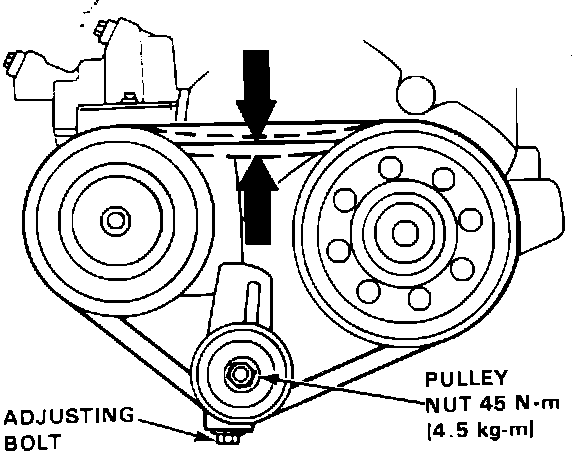

Drive Belt: Service and Repair
Drive Belt Tension Adjustment:

1. Loosen pulley nut. Turn adjusting bolt until correct belt tension (deflection) is obtained.
2. Torque pulley nut to 33 ftlb (45 Nm).
BELT TENSION (DEFLECTION)
9/32 - 23/64 in (7 - 9 mm) @ 22 lb (10 kg)